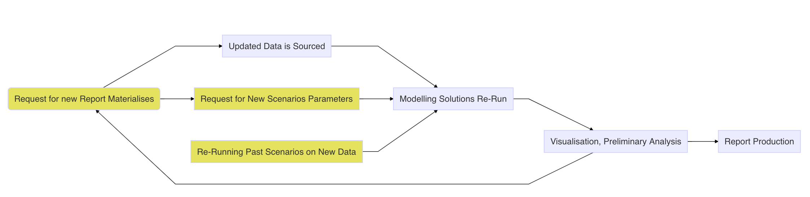

Poor Man’s Robust Shiny App Deployment
Not so uncommon problem…
RStudio Connect and more modest Shiny Proxy come to mind as most obvious solutions for deploying Shiny applications in production. Application servers are ideal for deploying applications that are to be consumed on a regular basis by larger audiences. In addition to serving the application, managing dependencies and user access or logging user activity are common tasks we would expect for a publishing platform to address. Frequently, however, deployment of Shiny application is directed at smaller audiences and less frequent usage. In such a situation, are availability, accessibility and user access management requirements will be often more modest. Commonly,in business a modelling or analytical solution can be packaged in Shiny application facilitating periodical re-run of models with different parameters and updated data sets. Such solutions can be conveniently utilised to facilitated development of monthly or quarterly reports. If the app is used once per month/quarter by a narrow user group the need to deploy it on the server is not well articulated. In that particular case we are mostly interested in ensuring that we can:
- Protect dependencies of our Shiny application
- Ensure that the relevant documentation is easily accessible
- Embed testing mechanism so we can be confident that we can safely re-run our model on a new data or with changed parameters
It is worth remaking that likely we can live without some of the things that proper deployment solutions offer. If the app is being utilised on an infrequent basis, very likely, we can accommodate a little bit of occasional effort in putting the application for production. In majority of cases, additional 5 - 15 minutes of work will seldom cause a significant impediment in case of a analytical product that is used on monthly or quarterly basis. Within a small user group it is also likely that we don’t have a strong need to manage complex user access and permissions. In effect, we are mostly interested in packaging our modelling and reporting solution for future, infrequent, usage.
What R community has to offer
If we remove the Shiny application words from the opening paragraph, majority of criteria and our key deliverables correspond to what we would usually expect to find in an R package. R packages have a robust way of storing documentation, facilitate comprehensive unit testing and dependency management. On the basic level the dependency management is well addressed by the DESCRIPTION file that constitutes an integral part of each R package.
The job of the DESCRIPTION file is to store important metadata about your package. When you first start writing packages, you’ll mostly use these metadata to record what packages are needed to run your package. However, as time goes by and you start sharing your package with others, the metadata file becomes increasingly important because it specifies who can use it (the license) and whom to contact (you!) if there are any problems.
R ecosystem offers a number of sophisticated alternatives to managing dependencies that may be more suitable for a collaborative project progressed in an organisational and/or corporate environment1 As we are looking at a solution that would be usable from a perspective of an advanced analyst it is safe to make an assumption that wise use of DESCRIPTION file will suffice. Same goes for testing and documentation development/storage. R package architecture facilitates storing and sharing of documentations. Whereas tools, like roxygen2 facilitate seamless documentation development. R community offers a number of approaches to unit testing with testthat package being one of the most popular ones.
What about Shiny?
The tools briefly describe above will be familiar to anyone who had some exposure to developing R packages. The key question, which still remains unanswered, pertains to any potential way we could leverage this architecture in order to facilitate deployment and sharing of an R package. Fortunately, R community offers an excellent solution facilitating distribution of Shiny applications using R package architecture. Developed by ThinkR R package golem facilitates development of R packages that focus on embedding Shiny applications.
Underbelly…
Authors of golem did an excellent job in creating robust in package documentation and providing vignettes on development, deployment and configuration as well as a comprehensive book2. In order to understand how golem works it’s necessary to recognise that Shiny Application is in effect a collection of ordinary R functions, some of which will be concerned with translating R code into user interface. An excellent outline of the Shiny Application structure is provided in Mastering Shiny book by Hadley Wickham.
Development strategy
The article makes an assumption that our Shiny Application is to serve as a wrapper for an existing modelling or analytical solution. In that case we would consider that we are working with a set of scripts akin to Drake pipeline3 In practice, this would imply that we have a set of functions that we are ready to package into a production ready solution. Usually we would have a set of functions that we may use to query corporate databases via DBI or similar solution, some pre-processing and modelling work and artefact generating functions, such as wrapper for ggplot2 graphics and tables. Our final product usually would be in a form of a report and/or presentation. In practice, our quarterly report updating cycle likely will look to the one illustrated below.

In practical terms, yellow boxes usually imply communication with consumers of the report and seeking clarification on usefulness of the provided analysis. It may be that availability of new data induced us to ask questions that weren’t previously observable. For sake of efficiency, we would strive to automate of the remaining processes as much as possible. If we were sufficiently foreseeing we have embedded most of our modelling and reporting work in manageable functions. Embedding Shiny application on that layer gives us another possibility of further automating the process of report delivery and re-running analysis.
Footnotes
Useful list is mentioned in this discusion at Stack Overflow.↩︎
Fay, C, Rochette, S, Guyader, V, Girard C 2020, Engineering Production-Grade Shiny Apps https://engineering-shiny.org/↩︎
Drake is a R package facilitating development of reproducible research projects, more information can be found on the official GitHub page.↩︎